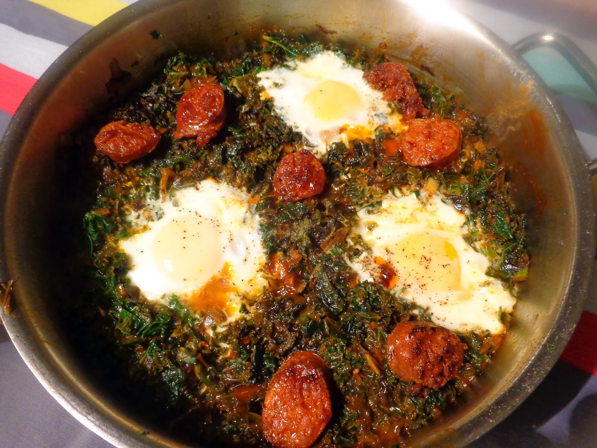

Chorizo met ei

Ingredienten
- 1 kilo vastkokende aardappelen, in gelijkmatige niet te kleine stukken gesneden
- 500 gr kerstomaatjes
- 1 grote ajuin, in grove stukken gesneden
- 250 gr chorizo, in schijfjes gesneden
- 4 eieren
- 4 eetlepels olijfolie
- 50 gr bakboter
Ingredienten
- Kook de aardappelen net niet gaar, giet af en laat de aardappelen volledig afkoelen.
- Verhit de olie + bakboter in een ruime braadpan met antiaanbaklaag.
- Bak de aardappelen + chorizo + ajuin krokant.
- Doe er 5 minuten voor het einde van de baktijd de kerstomaatjes bij.
- Kruid met peper en zout.
Verdeel de gebakken aardappelen met chorizo en kerstomaatjes over 4 schoteltjes (eventueel warm houden in een
oven van 150°C terwijl de eitjes gepocheerd worden) en leg hierop een gepocheerd ei.